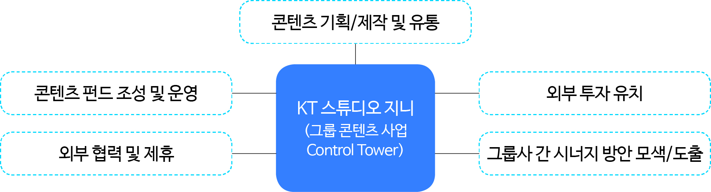

-
OTT가 콘텐츠 유통과 소비의 핵심 축이 되면서 나타난 중요한 제작 영역의 변화 중 하나는 바로 한국형 스튜디오 시스템의 형성이라 할 수 있다. 이 글에서는 이러한 한국형 스튜디오 시스템으로 대표되는 OTT 시대의 새로운 콘텐츠 제작-유통 방식을 국내외 사례를 통해 검토한다. 콘텐츠IP 측면에서 한국형 스튜디오들은 대부분 기획 단계에서 전략적인 IP의 선정과 확보, 유통 채널 확보 단계에서 IP권리에 대한 협상, 그리고 이후의 IP비즈니스 확장의 측면에서 적극적인 역할을 담당한다. 다수의 제작 부문의 연결을 통해 달성한 규모의 경제를 통해 안정적인 콘텐츠 수급을 이어가면서, 그 안정성 위에서 창의적인 콘텐츠 창작이 이어질 수 있는 구조를 만들어내는 것이 앞으로 스튜디오들에게 놓인 핵심 과업이 될 것이다.
-
1들어가며
지난 몇 년 간 영상콘텐츠 산업의 가장 큰 변화의 동력은 OTT 중심의 시장 재편이라고 평가할 수 있을 것이다. 온라인 기반의 영상 소비 문화의 확산은 기존의 영상 콘텐츠 산업의 핵심적인 구조에 영향을 주기 시작했다. 코로나19 팬데믹 기간 중 OTT 이용이 빠르게 증가하면서 이러한 변화는 보다 과격하게 진행되었다. 실시간 편성(linear programming) 중심의 방송사업자의 영향력은 이미 조금씩 약해지고 있었지만, OTT의 빠른 성장은 그 힘의 균형을 급격히 무너뜨렸다. 영상 콘텐츠 유통에 있어서 나타난 변화의 불꽃은 콘텐츠 제작 영역으로 옮겨붙었다. 결과적으로 영상 콘텐츠 산업은 제작부터 유통, 소비에 이르는 가치사슬 전반에서 격렬한 지각 변동을 경험하고 있는 것이다.
OTT가 콘텐츠 유통과 소비의 핵심 축이 되면서 나타난 중요한 제작 영역의 변화 중 하나는 바로 한국형 스튜디오 시스템의 형성이라 할 수 있다. 기존의 방송영상 콘텐츠 제작-유통의 구조는 힘의 우위를 가진 방송사업자를 중심으로 개별 콘텐츠 제작사가 의존해있는 방식이 대부분이었다. 아무리 좋은 작품이라 하더라도, 우선 방송 편성을 통해서 세상에 공개되는 것이 제작비를 회수하는 데 있어서 가장 중요한 수익 모델이었기 때문에 방송사업자의 영향력이 강력했던 것이다. OTT의 등장으로 콘텐츠 제작 부문에 큰 변화가 가능하게 했다. 방송 이외의 온라인과 해외라는 새로운 유통의 기회가 생기면서, 콘텐츠에 경쟁력을 가진 기업이 과거보다 높은 협상력을 가질 수 있게 되었다. OTT ‘오리지널’ 콘텐츠의 성공은 방송 편성이 콘텐츠의 생애주기에 있어서 출발점이 아닐 수 있다는 인식을 확산시켰다.
무엇보다, 지금까지 OTT 성장을 견인한 구독형 VOD(주문형 비디오) 유형의 콘텐츠 소비 방식은 사람들이 서비스에 대한 애착을 높이고 체류 시간을 늘리는 데 있어서 보다 긴밀한 ‘콘텐츠 IP’와 ‘연계 중심’의 기획의 중요성을 높여주었다. 전략적으로 콘텐츠를 기획하고, 이를 실질적으로 제작할 수 있는 주체와 자원을 연결시키며, 글로벌 시장을 포함한 전략적 유통 계획을 수립하는 역할이 중요해졌다. ‘스튜디오’는 바로 이러한 중간 영역을 책임지는 위치에 자리잡기 시작한 것이다.
이 글은 이러한 한국형 스튜디오 시스템으로 대표되는 OTT 시대의 새로운 콘텐츠 제작-유통 방식을 국내외 사례를 통해 파악하는 것을 목적으로 한다. 먼저 OTT 시대의 영상 콘텐츠 제작 및 유통 시스템의 변화에 대해 살펴보고, 국내외 주요 스튜디오 사례를 검토한 결과를 토대로, 향후 전망과 시사점을 도출하고자 한다.
-
2 OTT 시대, 영상 콘텐츠 제작 유통 시스템의 변화
2.1.할리우드에서 시작된 스튜디오 시스템의 특징과 변화
본래 영상 산업에서의 스튜디오 시스템은 미국 할리우드 영화 산업에서 유래했다. 일반적으로 할리우드 스튜디오 시스템은 제작사와 배급사가 수직적으로 통합된 방식, 즉 제작-배급-상영이 수직적으로 계열화된 방식을 의미하는 용어로 사용되어 왔다. 이는 기본적으로 인-하우스에서 제작된 작품을 자체 배급-상영망을 통해 유통하고, 외부의 독립 제작사의 작품도 수급하는 구조를 포함하는 것이었다(송낙원, 2020).
할리우드 스튜디오 시스템의 핵심적 특징은 콘텐츠의 대량 생산과 인력의 효과적 분배, 효율적 제작 관리 등 체계적인 제작 시스템의 구축이라 할 수 있다. 창작을 담당하는 다수의 제작사를 묶어주는 역할을 담당하는 중간 조직인 스튜디오에서 전반적인 콘텐츠 제작을 체계적으로 관리하는 구조를 만들어낸 것이다. 즉 스튜디오 시스템이란 정규화된 ‘스튜디오’ 조직이 제작을 총괄 관리하는 체계적인 시스템을 구축하는 것을 의미한다.
할리우드 스튜디오 시스템은 1949년 영화 산업에서 스튜디오의 독과점을 금지하는 반트러스트법(Anti-trust law)에 근거한 판결 이후 변화를 맞이하게 된다(송낙원, 2020). 극장 상영 부문이 스튜디오로부터 분리되면서 제작-배급-유통의 수직적 통합 구조가 깨지게 된 것이다. 그럼에도, ‘스튜디오’는 새로운 역할을 찾아나섰다. 이들 스튜디오는 극장과 더불어 TV 스크린을 새로운 유통 창구로 주목했다. 영상 콘텐츠 산업의 지형 변화 속에서 활발한 인수합병과 합종연횡이 이루어졌고, 1990년대를 지나면서 미국은 소수의 ‘메이저 스튜디오’가 중심이 되는 과점화된 제작 구조를 형성하게 된다. 시대의 변화에 적응하는 과정에서, 미국의 메이저 스튜디오들은 다수의 ‘프로덕션’들이 프로젝트 단위로 창작을 주도하는 흐름을 유연하게 활용하기 시작했다(송낙원, 2020). 또한 영화관만 소유하지 않았을 뿐, 스튜디오는 여전히 방송과 해외 배급 등 다각화된 유통의 구조 속에서 콘텐츠 생산의 중심 역할을 담당하고 있다. 이러한 미국의 스튜디오들을 원형으로 한국형 스튜디오 시스템이 만들어지기 시작한 것이다.
2.2. 한국형 스튜디오 시스템의 등장
한국형 스튜디오 시스템의 원형은 스튜디오드래곤으로부터 찾을 수 있다. 스튜디오드래곤은 CJ E&M의 드라마 제작 부분을 분할한 자회사로 설립되었다. 출범 당시 문화창고와 화앤담픽쳐스, KPJ 등 독립 제작사를 인수하고, 스스로는 일종의 중간지주회사와 같은 역할을 담당했다. 제작 시장은 작가와 감독 중심의 제작사가 자율적으로 주도하게 하되, 사업을 효율적으로 관리하고 규모의 경제를 만들어내는 일은 스튜디오가 담당하는 방식이었다.
무엇보다 스튜디오 드래곤은 기존의 방송사-독립제작사의 구조에서 발생하던 편성 우위의 구조를 탈피하고, 콘텐츠 창작의 양적 규모를 늘림으로써 제작의 효율화를 가능하게 했다. 제작 부문은 독자적인 프로덕션에서 담당하되, 정규화된 기획PD들이 지속적으로 콘텐츠를 기획하고, 이를 단일 방송사가 아닌 다수의 채널과 협상하며 공급하는 방식을 취한 것이다.
그림 1스튜디오 드래곤의 비즈니스 모델 개념도
출처: 채널CJ
스튜디오 드래곤의 등장은 기존의 방송사-독립제작사의 구도와는 다른, 콘텐츠 제작의 전문화, 대형화된 전략의 적극적 추진의 시작을 의미했다(공희정, 2020). 스튜디오가 중심이 되어 다수의 제작사와 협력하는 구조를 통해 스튜디오드래곤은 연간 제작 편수를 크게 확장할 수 있었고, 이를 통해 위기 관리 역량을 강화할 수 있었던 것이다(조영신, 2018).
한국형 스튜디오 시스템은 OTT 시장의 성장과 함께 콘텐츠 기획-제작 부문의 핵심적인 요소로 자리잡기 시작했다. 스튜디오S, SLL과 같이 기존의 방송사업자와 연계되어 있는 제작 조직이 스튜디오로 진화하거나, KT의 스튜디오 지니와 같이 통신사업자의 가치사슬 연계의 중간 역할을 담당하는 조직의 형태를 갖는 주체의 등장이 대표적인 사례다. 국내 OTT 서비스 웨이브도 자체 콘텐츠를 기획, 개발하는 역할을 담당할 스튜디오 웨이브를 2021년 출범시킨 바 있다. IT플랫폼 기업 네이버도 웹툰 등 스토리IP 역량을 영상 영역으로 확장하기 위한 조직으로서 스튜디오N을 운영하고 있다.
2.3. 한국형 스튜디오 시스템의 특징과 콘텐츠 기획-제작의 변화
한국형 스튜디오 시스템은 기획-제작 측면에서 다음과 같은 특징을 보여준다. 먼저 스튜디오가 콘텐츠 기획과 IP 확보 및 유통 전략을 총괄하고, 독립된 제작 본부와 연계된 제작사가 자율성을 갖고 창작 활동을 전개한다. 인수합병과 전략적 투자를 통해 제작 역량을 내재화하고, 기획 프로듀서의 역할을 강화한 것이다.
다음으론 미디어 플랫폼과 스튜디오의 관계의 측면에서 스튜디오의 협상력이 강화되었다는 점이다. 다수의 OTT 서비스의 등장으로 유통 경로가 다양화 되면서 스튜디오가 프로젝트의 주도권을 가질 수 있는 환경이 마련되었다. 특히 기존에 개별 독립제작사들이 방송사업자들에게 의존하는 구조에서, 스튜디오가 그 중간 지대를 점유하며 다수의 제작사들의 연결고리 역할을 하기 시작했다.
마지막으로 사업 전략의 다각화를 들 수 있다. 콘텐츠 창작은 개별 제작 부문에서 전담하여 진행하는 상황에서, 해당 콘텐츠의 국내 및 해외 유통, 기존 라이브러리의 활용, IP 확장 및 활용 등 IP비즈니스 전략의 실행 등을 스튜디오가 담당할 수 있게 된 것이다. 기존의 독립제작사는 제작 영역에 특화된 역량을 가지고 있었기 때문에 콘텐츠와 IP를 활용한 비즈니스의 확장을 직접 수행하기에 한계가 있는 경우가 많았다. 스튜디오 시스템에서는 이를 스튜디오가 주도해서 수행함으로써 사업적 확장이 가능하게 되었다.
스튜디오가 주도하는 콘텐츠 제작이 확대되면서, 눈여겨 볼 변화 중 하나는 바로 콘텐츠IP의 중요성이 높아지고 있다는 점이다. 현재 다수의 OTT 서비스는 주문형 영상이 중심이 되는 구독형 서비스, 즉 SVOD(Subscription Video On Demand)를 제공하고 있다. SVOD 기반의 비즈니스 모델에서 중요한 것은 사람들이 구독을 유지할 수 있게 하는 풍부한 라이브러리의 구축과, 구독을 유도하게 하는 오리지널 콘텐츠, 그리고 이들이 유기적으로 연결될 수 있게 하는 연계소비 전략이라 할 수 있다.
콘텐츠IP는 기존 원작 팬덤의 관심을 끌어들이는 점에서나, 작품들 간의 연계를 강화할 수 있다는 점, 지속적인 시즌의 확장을 통해 라이브러리를 확대하고 연계소비를 촉진할 수 있다는 점에서 OTT의 핵심 경쟁력의 하나로 주목받고 있다.
콘텐츠IP 측면에서 한국형 스튜디오 들은 대부분 기획 단계에서 전략적인 IP의 선정과 확보, 유통 채널 확보 단계에서 IP권리에 대한 협상, 그리고 이후의 IP비즈니스 확장의 측면에서 적극적인 역할을 담당한다. 유연한 IP전략의 수행을 위해선 개별 유통 플랫폼과 일정 정도 거리를 둔, 중간 위치에서의 활동이 필요하다는 점도 콘텐츠IP 부문에서 스튜디오의 입지를 강화하는 요인이다. 개별 독립 제작사로선 다루기 어려웠던 IP전략을 전담하면서, 스튜디오는 콘텐츠IP 중심의 영상 콘텐츠 시장 재편의 핵심적인 주체로서 부상하고 있는 것이다.
-
3국내외 사례를 통해 본 스튜디오 중심의 산업 변화
스튜디오 중심의 영상 콘텐츠 산업의 변화를 구체적으로 확인하기 위해 국내외 사례를 살펴보자. 이미 메이저 스튜디오의 영향력이 강한 미국의 경우에도 OTT의 성장에 따른 산업 지형의 변화가 나타나고 있다. 국내에서는 스튜디오 시스템이 확산되면서 산업 구조 변화가 가시화되고 있다.
3.1.해외 사례: OTT 중심의 산업 재편 속 활발한 인수합병과 합종연횡
메이저 스튜디오의 영향력이 강력한 미국 시장에서 최근에 나타난 변화의 핵심은 OTT가 핵심적인 콘텐츠 유통 수단으로서 자리잡게 되었다는 것이다. 특히 주요 메이저 스튜디오 다수가 자체 OTT 서비스를 강화하고 있는 것이 특징적인 변화다.
월트디즈니(Walt Disney)는 디즈니플러스(Disney+)를, 워너브라더스디스커버리(Warner Bros.Discovery)는 HBO맥스(HBOmax)를, 파라마운트(Paramount)는 파라마운트플러스(Paramount+)를, NBC유니버설(NBC Universal)은 피콕(peacock)을 각각 서비스하고 있다. 기존에도 주요 메이저 스튜디오들이 미디어 복합기업의 형태를 취하고 있었다는 점을 생각하면, 이들이 온라인 스트리밍을 전면에 내세우고 있다는 점은 눈여겨 볼만한 부분이다. 넷플릭스가 촉발한 OTT 서비스, 즉 온라인 스트리밍 중심의 시장 재편에 대한 대응으로 메이저 스튜디오들의 수직 계열화된 제작-유통 구조를 보다 공고히 하고 있는 것이다. OTT 시대의 핵심 경쟁력이 콘텐츠라는 점을 고려할 때, 이러한 연계는 보다 강화될 가능성이 높다고 볼 수 있다.
넷플릭스는 콘텐츠 경쟁력을 강화하기 위해 자체 OTT를 서비스하지 않는 스튜디오들과의 협력을 강화하고 있다. 2022년부터 극장 개봉되는 소니 픽쳐스 엔터테인먼트(Sony Pictures Entertainment, SPE)의 장편영화를 넷플릭스가 미국 시장에서 최초로 독점 제공할 수 있는 다년간의 라이선스 계약을 체결한 것이 대표적인 사례다(넷플릭스, 2021.4.9.).
아마존(Amazon)은 지난 3월 MGM 스튜디오의 인수를 완료했다. OTT 서비스 아마존 프라임(Amazon Prime)의 콘텐츠 경쟁력을 강화하기 위한 전략으로 9조 5,000억 원에 MGM을 인수한 것이다(조선비즈, 2021.5.26.). MGM은 영화 <007> 시리즈와 <록키(Rocky)> 시리즈 등 다수의 콘텐츠IP를 보유하고 있다는 점에서, 이번 인수를 통해 아마존은 핵심 콘텐츠IP 프랜차이즈의 권리를 확보하면서 제작 경쟁력도 함께 확보할 수 있게 되었다.
OTT 경쟁이 심화되면서 콘텐츠의 가치가 높아지면서, 이들의 가치에 주목한 인수 합병이 활발하게 나타나고 있는 것도 주목할만한 부분이다. 미국의 사모펀드 아폴로(Apollo)는 중국이 보유했던 레전더리 스튜디오(Legendary Studio)의 지분을 7억 6,000만 달러에 사들였고, 사모펀드 블랙스톤(Blackstone)이 리즈 위더스푼(Reese Witherspoon)의 스튜디오 ‘헬로우 선샤인(Hello Sunshine)’과 키즈 콘텐츠 제작사 ‘문버그 엔터테인먼트(Moonbug Entertainment)’를 인수했다(Financial Times, 2022.2.6.).
이들은 치열한 콘텐츠 경쟁 속에서 IP자원과 제작 역량을 갖춘 스튜디오의 중요성이 높아질 것이란 점에 주목하고, 이러한 투자 결정을 진행한 것으로 알려져 있다.
최근 미국에서 나타나고 있는 산업 지형 변화의 핵심은 콘텐츠IP 권리와 라이브러리를 확보하고, 제작 역량을 흡수하며, OTT 중심의 유통 역량을 제고하는 노력의 확대라고 요약할 수 있다. 콘텐츠 경쟁력을 확보하기 위해 OTT 서비스와 스튜디오와의 긴밀한 협력의 필요성이 높아지고 있다는 점도 사례 검토를 통해 확인할 수 있는 부분이다.
3.2.국내 사례: 스튜디오 시스템의 확산
한국에서도 영상콘텐츠 산업의 중심이 OTT로 빠르게 이동하면서, 스튜디오 시스템을 적용한 사례가 확산되고 있다. 이들은 콘텐츠 기획에 특화된 스튜디오란 중간 조직을 활용한다는 점에서 공통점을 갖지만, 가치사슬의 연계 측면에서 서로 다른 전략을 취하고 있다. 그 중 대표적인 3개 기업의 사례를 간략히 살펴보고자 한다.
먼저 KT 그룹의 ‘스튜디오 지니’는 KT 그룹의 미디어 콘텐츠 역량을 모아서 투자, 기획, 제작, 유통을 아우르는 역할을 담당하는 전문 기업이다. 웹소설·웹툰 전문 자회사 ‘스토리위즈’를 통해 우수 콘텐츠IP를 발굴하고, 제작사들과 협력을 통해 영상화를 진행한다. 지난 5월에는 드라마 <원더우먼>의 제작사 ‘점보필름’에 대한 투자를 진행하는 등 제작 역량을 갖추기 위한 노력도 이어가고 있다.
그림 2KT 스튜디오 지니의 역할
출처: KT
‘스튜디오 지니’의 특징은 통신사이자 미디어 기업인 KT그룹사와의 긴밀한 협력 관계에 있다. 방송 채널(ENA), 유료방송 플랫폼(올레TV, 스카이라이프), OTT(KT시즌) 등 유통 역량에 콘텐츠 기획-제작 역량을 강화하는 역할을 담당하고 있는 것이다. ‘스튜디오 지니’의 출범은 기존에 IPTV이 중심이 되었던 유료방송 중심의 콘텐츠 유통의 흐름이 OTT 중심으로 재편되고, 콘텐츠 분야의 경쟁력 확보가 중요해지고 있음을 보여주는 사례라 할 수 있다.
다음으로 방송사업자 JTBC 계열의 스튜디오 ‘SLL’은 기존의 JTBC 스튜디오를 개편한 것으로, JTBC 방송 채널에 한정된 사업이 아닌, 글로벌 시장 개척을 시도하는 보다 확장된 사업을 추진하는 것을 목표로 한다. SLL의 특징 중 하나는 15개의 독립된 제작사들을 ‘제작 레이블’이란 이름으로 연계하고 있다는 점이다. 이는 자체 OTT 서비스가 없는 스튜디오라는 한계를 창작 영역의 자율성과 독립성을 바탕으로 한 콘텐츠 경쟁력 강화로 돌파하려는 전략이라 할 수 있을 것이다.
마지막으로 CJENM은 ‘멀티 스튜디오’라는 전략을 내세우고 있다. 지난 4월 ‘CJENM 스튜디오스(STUDIOS)’라는 새로운 스튜디오를 설립하면서 기존의 ‘스튜디오드래곤’과 ‘엔데버콘텐트(Endeavor Content)’를 포함하는 3대 축으로 구성된 ‘멀티 스튜디오’를 구축한 것이다. ‘CJENM 스튜디오스’는 국내외 OTT를 타겟으로 하는 멀티 장르 콘텐츠 기획개발과 제작을 맡게 되며, 스튜디오드래곤은 드라마 장르 중심의 기획·제작을, 글로벌 스튜디오인 엔데버콘텐트는 미국 현지에 콘텐츠를 유통하는 역할을 담당하게 된다.
그림 3SLL의 제작 생태계 구조
출처: SLL
CJENM의 멀티 스튜디오 전략은 OTT 중심의 시장 변화의 영향력이 드라마 장르를 넘어서 예능 등 다양한 장르로까지 확대되고 있음을 보여주는 사례라고 볼 수 있다. 또, 2022년 1월 인수 절차가 완료된 ‘엔데버 콘텐트’의 사례는 OTT 서비스가 글로벌 콘텐츠 시장에 대한 접근성을 높여주면서, 한국의 영상 콘텐츠 산업이 글로벌 유통을 고려한 전략을 수립하기 시작했음을 보여준다.
-
4향후 전망과 시사점
스튜디오가 중심이 되는 영상 콘텐츠 기획-제작 시장의 재편은 ‘콘텐츠 경쟁력’ 중심의 산업 구조의 변화를 상징한다. 유통 부문이 OTT를 중심으로 재편되면서 우수한 콘텐츠를 확보할 수 있는 효율화된 구조를 확보하려는 노력이 본격화되었다. 방송, 통신 등 기존의 미디어 사업자들은 스튜디오를 중심으로 다수의 콘텐츠 제작사들을 유기적으로 연결하며 콘텐츠를 안정적으로 수급할 수 있는 구조를 만들고 있다.
이전까지의 한국 영상 콘텐츠 산업의 제작-유통 구조는 과점화된 방송 사업자가 콘텐츠 기획 영역에서 영향력을 발휘하고, 이를 IPTV, 케이블TV 등 유료방송 시장에서 유통하며, 개별 독립제작사들이 방송사업자와 연계하는 방식이 주류를 이루었다. OTT의 등장으로 유통 플랫폼의 경로가 다양화되는 과정에서 등장한 ‘스튜디오’들은 기존의 방송사업자의 위치에서 제작의 자원들을 모으는 구심점이 되고 있다. 특히 이들은 앞으로 콘텐츠IP 전략의 기획과 수행의 관점에서 기존의 조직보다 적극적인 역할을 해나갈 것이라 예상된다.
OTT가 가져온 미디어 시장의 변화는 스튜디오 시스템의 확산이라는 콘텐츠 기획-제작 구조의 변화로 이어지면서 한국의 영상 콘텐츠 산업 지형을 근본에서부터 바꾸어가고 있다. ‘레이블’과 같은 형태로 독립 제작사들과 유기적 연결을 강화하는 스튜디오의 전략은 마치 K-팝 산업에서 주요 기획사가 중심이 되는 산업 지형 변화를 떠올리게 한다. 이들이 가진 핵심 경쟁력이 단순히 ‘좋은 노래’가 아닌 보다 종합적인 아이돌 프로덕션의 역량이었던 점에서 영상 산업의 미래도 예측해볼 수 있을 것이다. 즉, 다수의 제작 부문의 연결을 통해 달성한 규모의 경제를 통해 안정적인 콘텐츠 수급을 이어가면서, 그 안정성 위에서 창의적인 콘텐츠 창작이 이어질 수 있는 구조를 만들어내는 것이 앞으로 스튜디오들에게 놓인 핵심 과업이 될 것이다.
-
Reference
- 공희정(2020). 스튜디오 시스템 시대, 드라마는 어떻게 변하고 있나, 한류NOW 2020 7+8호, 한국국제문화교류진흥원
- 넷플릭스(2021.4.9.) 넷플릭스, 소니 픽처스 엔터테인먼트와 장편영화 미국 내 스트리밍 독점 라이선스 계약 체결, 넷플릭스 보도자료
- 송낙원(2020). 스튜디오의 시작, 미국 스튜디오 시스템의 과거와 현재, 한류NOW 2020 7+8호, 한국국제문화교류진흥원
- 조영신(2018). <스튜디오 드래곤>, 한국 영상 제작의 새로운 신호탄을 쏘다, 방송 트렌드&인사이트 2018년 1호(vol.14), 한국콘텐츠진흥원
- 조선비즈(2021.5.26.). 아마존, 9조5000억원에 MGM 인수… 스트리밍 강화
- 채널CJ(2019.1.30.). 인간애 넘치는 프로듀서가 되고 싶어요! 스튜디오 드래곤 이정묵 PD.
- Financial Times(2022.2.6.). Private equity groups hunt for Hollywood deals to cash in on streaming boom.